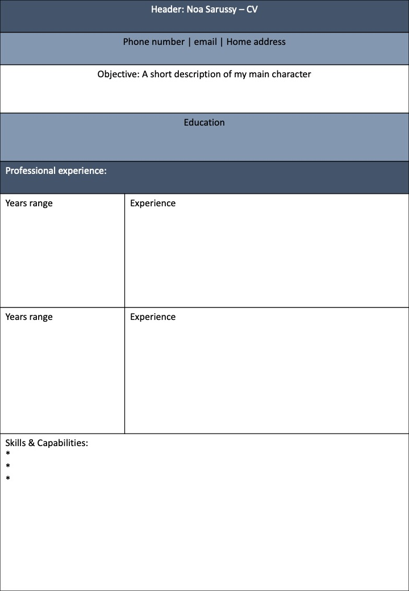

מה קהל היעד של האתר? מעסיקים פוטנציאליים ומגייסי כוח אדם
מה המטרה הראשית של האתר? הפצת קורות החיים שלי ומתן גישה למספר רב של בעלי עניין (מעסיקים וכו׳)
מה המטרות המשניות? התנסות בבניית אתר לקורות החיים שלי, התנסות באיפיון הצרכים, הן מבחינת חווית המשתמש (UX) והן מבחינת ממשק המשתמש (UI)
מה הפעולות שאתם רוצים שהמשתמש יבצע באתר? קריאת קורות החיים, צפייה בכישורים שלי, יצירת קשר דרך פרופילים שונים (טלפון, אימייל, לינקדין)
מה מדדי ההצלחה? לפחות 3 פניות בשבוע, לפחות 10 כניסות בשבוע, מציאת עבודה
לאיזה עולם תוכן האתר מתייחס? עולם התעסוקה ומציאת עבודה רלוונטית בתעשייה

הפונט של האתר יהיה Georgia, שהוא פונט קריא ונוח לשימוש גם בתצוגת web וגם בתצוגת mobile